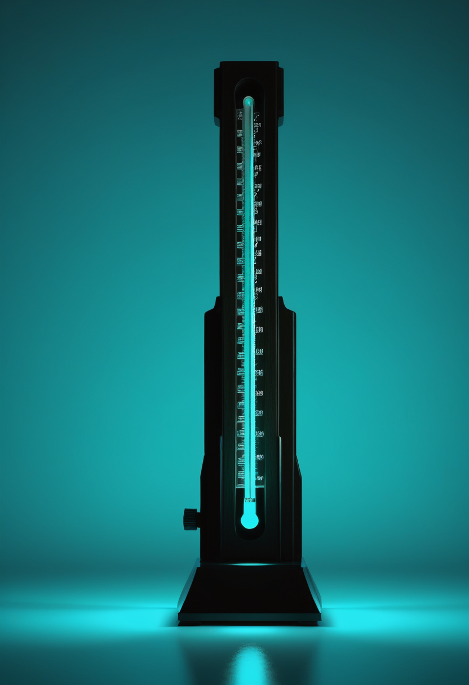

日曜日の便り。JAXAの火星衛星探査機MMXが10月20日未明に種子島から打ち上げられ、上段分離の成功とプローブの安定状態が確定した。目指すのはフォボスの試料を持ち帰る2031年までの長い旅。畏敬の章ではこれに加え、ESAのHeraが小惑星系との相対速度を合わせる減速噴射の計画と、シェーグレン病の新薬ianalumabが数値では効いても患者の実感には届かなかったという試験結果を届ける。基盤の章では、ケニアのエボラ接触者134人が本日検疫を解除される見込みであることと、DRCで急増するコレラ、米国の麻疹が週178例増のペースで積み上がっていることを。自由の章では、臨床的に無反応と判定されたICU患者の3人に1人が思考だけで音を操った研究と、視線入力のTobiiが売上は減っても中身は伸びているという決算を。命の章では、サラネルセンの最初の投与が米国・日本で始まったことと、成人SMA患者に合う評価指標がまだ無いという現場の声を。美の章では、国連のニューロテクノロジー報告が求める具体的な3つの要求と、イタリアの湖から引き揚げられた3本目の青銅器時代の剣を取り上げる。
10/20号の続報 — 打ち上げ自体は報じたが結果は執筆時点で未確認としていた。JAXAの火星衛星探査機MMX(Martian Moons eXploration)は、日本時間10月20日午前4時41分、H3ロケット10号機で種子島宇宙センターから打ち上げられた。約1時間11分後、ロケット上段からの分離に成功。プロジェクトマネージャーの川勝康弘氏は『探査機が安定した状態にあることを確認した』と述べた。火星圏到着は2027年夏ごろの見込みで、火星最大の衛星フォボスに着陸し、少なくとも10グラムの試料を採取、フランス製の小型ローバー『IDEFIX』による表面観測も行う。試料は2031年に地球へ帰還する計画で、実現すればフォボスに着陸・試料回収した世界初の探査機になる。打ち上げは当初2024年の計画から、H3ロケットの開発遅延などで延期されていた。
Biogenが年1回投与を目指して開発するアンチセンス薬サラネルセン(BIIB115)について、同社は9月22日付のアップデートで、乳児から成人までを対象とする新たな第3相試験を開始し、米国と日本で最初の参加者への投与を既に終えたことを明らかにした(Cure SMAの業界アップデートが引用)。サラネルセンは6月にFDAの画期的治療薬指定を受けている。別の試験(NCT07444450、ゾルゲンスマ既治療の乳児が対象)は10月31日に開始予定で登録が進行中だが、今回判明したのはそれとは別の、より広い年齢層を対象とする第3相試験での投与開始だ。

NeurologyLiveが掲載したAjroud-Driss医師(ノースウェスタン大学)へのインタビュー記事(2026年8月12日公開、9月28日修正)は、新しい臨床試験データではなく、現場の専門医が見る成人SMA診療の未解決課題を伝える。同医師は『成人集団に使う評価指標は、臨床的な改善をとらえるほど感度が高くない』と述べ、併用療法の是非や治療切り替えの時期も『分からない』とした。遺伝子治療が2025年11月に成人へも承認対象が広がった一方、実施方法や効果が出るまでの時間は不明なままで、嚥下・栄養・呼吸の支援、小児科から成人医療への移行、多職種ケアへのアクセスも課題として挙げられている。
SMAは薬を『足す』段階に入ったが、足した効果を測る物差しが成人にはまだ合っていないという現場の声が同じ月に上がっている。投与の広がりと評価の精度は、別々の速さで進んでいる。
コロンビア大学メディカルセンターの研究チームは、急性脳損傷で臨床的に無反応と判定された患者41人を対象に、頭皮に貼る非侵襲EEG電極でブレイン・コンピュータ・インターフェースを試した。短い訓練の後、手を開閉することを想像してヘッドホンのビープ音の高さを上げ下げするよう求めたところ、約3人に1人が身体を動かさずに音を制御できた。この中には、別の検査で『認知運動解離』(意識はあるが外見上は無反応な状態)が検出されていた患者が全員含まれていた。論文「Clinically unresponsive patients with acute brain injury activate a brain-computer interface」は10月23日に学術誌Brainに掲載された。Jan Claassen教授は『このBCIはまだ第一歩に過ぎない』としつつ、将来的に一部の患者に意思疎通の『声』を与えられる可能性を示したと述べている。
視線計測の本家Tobiiは10月22日、第3四半期決算を公表した。売上高はSEK1億4,000万で前年同期のSEK1億5,800万から11%減。だが前年同期に含まれていたDynavoxとの事前購入契約(SEK3,000万)と一時的ロイヤリティ(SEK700万)を除いた調整後オーガニック成長率は+16%だった。製品・ソリューション部門はSEK8,600万でオーガニック+3%に復帰、組み込み(Integrations)部門はSEK4,200万で一時項目を除くと+31%。一方でCEOのFadi Pharaon氏は『当社の流動性は厳しく、複数の財務上の義務が迫っている』と述べ、2027年に控える税金繰延分の返済などを前に、財務基盤の確保を最優先課題とした。
無反応と見なされた患者に『音』という出口を与える技術が一歩を刻む一方、視線入力という最も成熟した応用の一つが資金繰りに苦しんでいる。技術が育つ速さと、事業が生き延びる速さは、同じ業界でも別の話だ。
ケニアで確認されたエボラ(ブンディブギョ型)の9例は、いずれも最初の患者につながる単一クラスターとされ、保健当局は『このクラスター外への感染の証拠は現時点でない』としている。接触者135人のうち134人を追跡・検疫してきたが、21日間の監視期間を問題なく終えた大多数が本日10月25日から帰宅できる見込みだ。保健当局は住民に帰宅者の受け入れを呼びかけ、検疫施設内での感染は発生していないと説明している。
WHOの集計によると、コンゴ民主共和国(DRC)では2026年に入ってから疑い例51,412件以上・死亡1,487件が21州で報告されている(9月末時点)。直近の週(9月21〜28日)は疑い2,932件・死亡86件で、前週の2,506件・62件から増加した。南キブ・北キブ・オー・カタンガの3州で疑い例の約6割を占め、東部では治安と物流の悪さが対応を妨げている。エボラの確定例集計とは別の『疑い例』の数字であり、単純に足し合わせることはできないが、同じ医療網・同じ地域に二つの流行が重なっている現実は変わらない。
米CDCは10月22日時点で、今年の麻疹確定例が4,588件に達したと公表した。前週(10月15日時点の4,410件)から178件(約4.0%)増え、増加ペースは鈍化していない。CNNは10月21日、特に致死率が高く見えるペンシルベニア州の流行について、軽症例の捕捉漏れ(過少報告)で分母が小さくなっている可能性を指摘した。
DRCでは致死率の高いエボラと、疑い5万件超のコレラが同じ医療網に重なる一方、ケニアでは接触者が検疫を終えて日常へ戻り始める。悪化と回復が同じ週、同じ大陸で同時に進んでいる。
10/20号の続報 — 打ち上げは報じたが結果は執筆時点で未確認としていた。JAXAの火星衛星探査機MMXは日本時間10月20日午前4時41分、H3ロケット10号機で種子島宇宙センターから打ち上げられ、約1時間11分後にロケット上段からの分離に成功した。プロジェクトマネージャーの川勝康弘氏は探査機が安定した状態にあることを確認したとしている。火星圏到着は2027年夏ごろの見込みで、フォボスに着陸して少なくとも10グラムの試料を採取し、フランス製の小型ローバー『IDEFIX』による表面観測も行う。試料の地球帰還は2031年の計画で、実現すれば火星の衛星から試料を持ち帰る世界初の探査機になる。
ESAは10月7日、小惑星防衛探査機Heraが10月15日と22日に計93分間の減速噴射(ブレーキバーン)を実施する計画を発表した。Heraは地球に対して秒速約12kmで飛行しており、NASAの衝突実験(DART)の対象となったディディモス・ディモルフォス連星系に到着するには、この速度差を縮める必要がある。2回の噴射を経て、11月初旬にも同系への最初の接近(ランデブー)を迎える計画だが、噴射が計画どおり完了したかは本稿執筆時点で確認できていない(要確認)。実現すれば、人類が小惑星の軌道と自転をどこまで変えられたかを確かめる6か月間の観測が始まる。
10月21日号のNEJMに、シェーグレン病に対する抗BAFF受容体抗体ianalumabの第3相試験2件(NEPTUNUS-1・275人、NEPTUNUS-2・504人)の結果が掲載された。月1回300mg投与群は、48週時点の疾患活動性指標ESSDAIをプラセボより有意に低下させ、主要評価項目を達成した。一方、ノバルティス自身の発表によれば、患者自身が感じる症状を測る副次評価項目では、統合解析・個別解析のいずれも統計的な有意差には届かなかった。医師が測る指標では動き、患者が感じる症状では動かなかった形で、評価尺度の選び方が結論を左右する典型例となっている。
10億kmを超える距離を飛んできた探査機、速度差を縮め始めたもう一つの探査機、数値では効いても本人の実感には届かなかった薬。『届くこと』と『届いたと感じられること』は、宇宙でも医学でも別の話だと気づかされる一日だった。
10月15日に国連総会へ提出された事務総長報告(文書番号A/81/351)は、神経技術の進歩が人権を守る法整備を追い越していると警告している。今日判明したのは、報告が求める具体的な内容だ:①強制的・濫用的な神経技術の利用を禁止すること、②強力な法的・倫理的保護措置を確立すること、③神経データを『極めて機微な個人データ』として特別に保護すること。加えて、インフォームド・コンセント、科学的検証、監督、説明責任も求めている。脳データが本人に不利に使われうるという論点が、抽象的な警告から具体的な要求事項へと一歩進んだ形だ。
イタリア中部のメッツァーノ湖(ヴィテルボ県)で9月28日、イタリア国家警察(カラビニエリ)の潜水チームの協力のもとに考古学者が青銅器時代の剣を回収した。州の文化財監督局は紀元前13世紀のものと推定し、刃はまだ鋭さを保っていたという。1970年代から調査が続くこの湖でこれまでに見つかった剣としては3本目。湖底には紀元前1700〜1150年ごろに人が住んでいた高床式の集落跡があり、2025年の調査では600本を超える木柱と25点を超える青銅製品(斧・槍先・ブローチなど)が見つかっている。なぜこれほど多くの精巧な剣が湖に沈められたのかは、今も分かっていない。
脳データをどう守るかという最新の法整備の動きと、3000年前に湖に沈められた剣の謎。なぜ沈めたのかは今も分からないままだが、人が何を大切にし、何を手放したかの跡は、形を変えて今も積み重なっている。
日曜日の便り。JAXAの火星衛星探査機MMXが10月20日未明の打ち上げから上段分離の成功とプローブの安定状態を確定させ、2031年の試料帰還に向けて長い旅に出た。畏敬の章ではこれに加え、ESAのHeraが小惑星系との速度合わせに入ったことと、シェーグレン病の新薬ianalumabが数値では効いても患者の実感には届かなかった試験結果を届けた。基盤の章では、ケニアのエボラ接触者134人が本日検疫を解除される見込みであることと、DRCで急増するコレラ、米国の麻疹が週178例増のペースで積み上がっていることを伝えた。自由の章では、臨床的に無反応と判定されたICU患者の3人に1人が思考だけで音を操った研究と、視線入力のTobiiの決算を取り上げた。命の章では、サラネルセンの最初の投与が米国・日本で始まったことと、成人SMA患者に合う評価指標がまだ無いという現場の声を届けた。美の章では、国連のニューロテクノロジー報告が求める具体的な3つの要求と、イタリアの湖から引き揚げられた3本目の青銅器時代の剣を取り上げた。
では、また明日の朝に。 — JaH